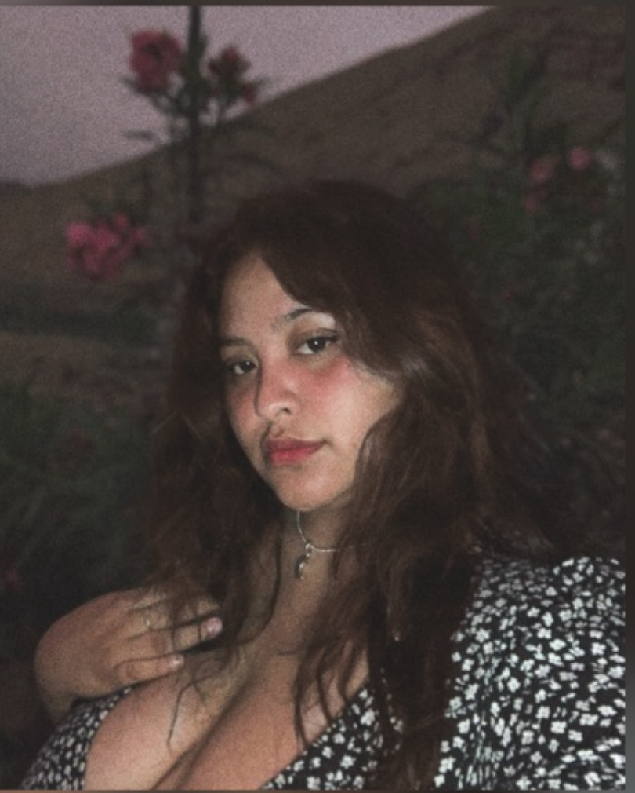

 Hola soy Danna Rayo, tengo 24 años, me estoy reincorporando a estudiar después de 2 años así que estoy super emocionada. Me encuentro en el 7ciclo de mi carrera, actualmente estudio y trabajo, suelo dedicarme a dirección de arte y styling.
Mi idea de proyecto para Laboratorio de Innovación 2 es un producto llamado Solar Vision el cual es un espejo que tiene luces que funcionan con temperatura de color en grados Kelvin lo cuál lo hace útil para maquilladores que trabajan en cortos, series o películas, este espejo funcionaria con focos led, seria impreso en 3D y usaría una app para cambiar las temperaturas de color.
 Nuestro logo es un trébol, el cual tiene nuestras iniciales, lo elegimos porque deseamos mucha suerte para poder aprobar el curso.
Nuestro logo es un trébol, el cual tiene nuestras iniciales, lo elegimos porque deseamos mucha suerte para poder aprobar el curso.